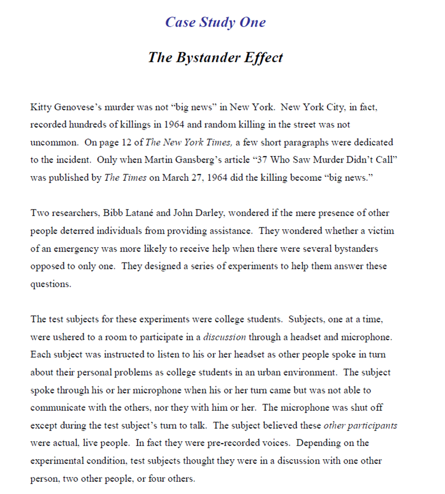
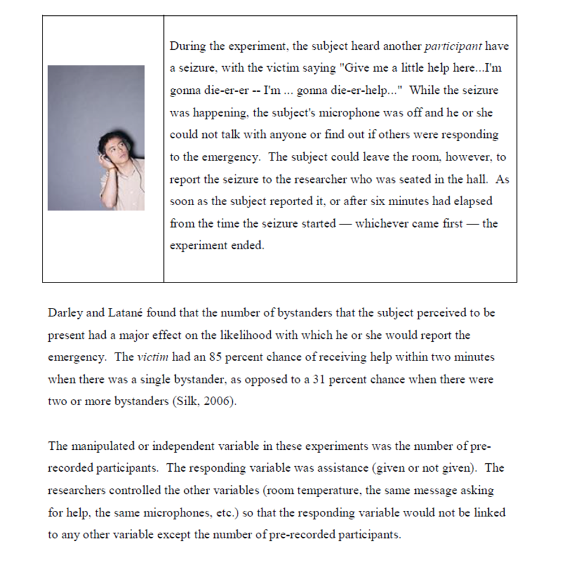
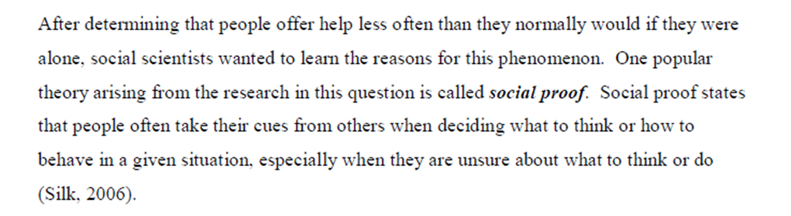
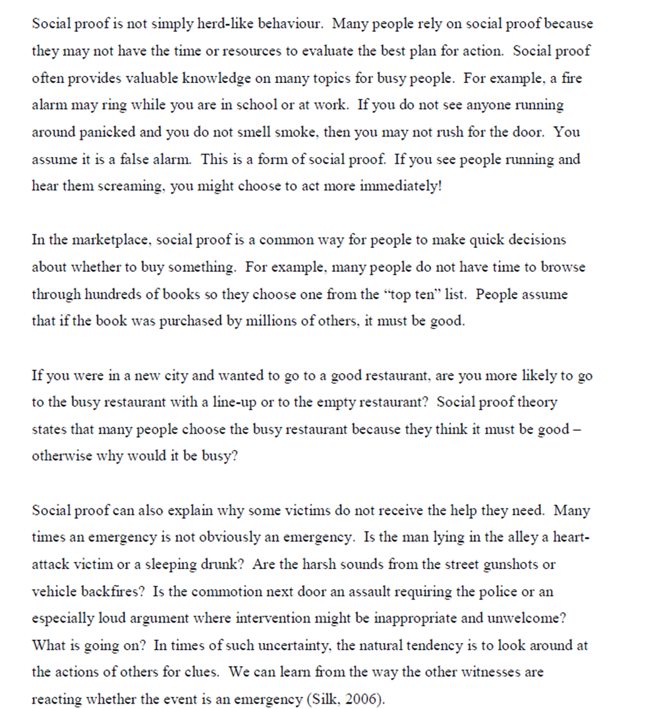
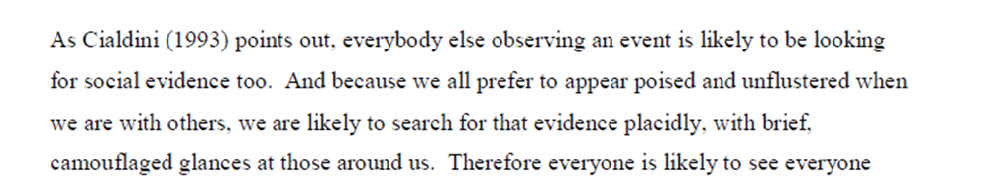
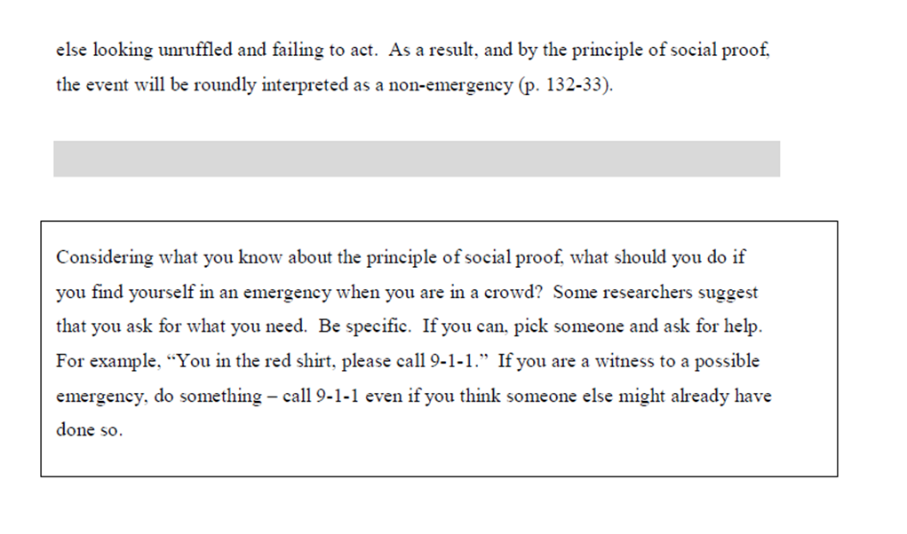

As noted on the previous page, psychologists wondered if Kitty would have received the help she needed had she been attacked in the presence of only one witness.
To help answer this, Bibb Latané and John Darley designed a series of experiments described in Case Study 1 (The Bystander Effect). Please review the case study below:






social proof: the idea that people often take their cues from others when deciding what to think or how to behave in a given situation, especially when they are unsure about what to think or do
(this link opens in a new window/tab)